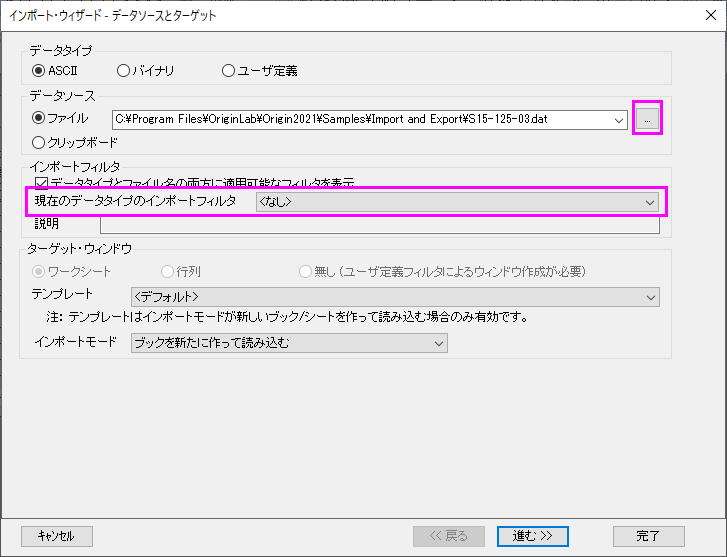
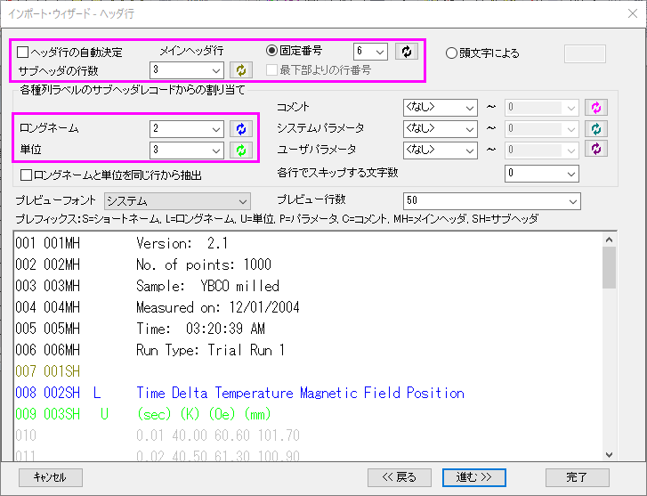
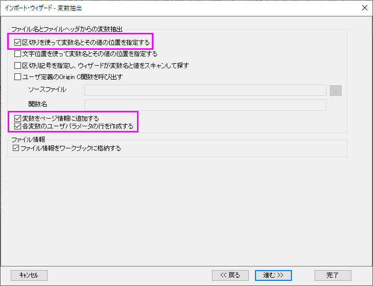
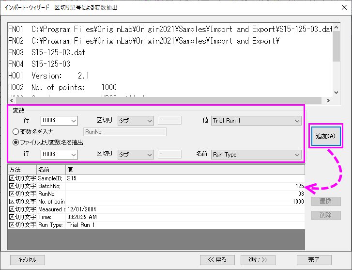
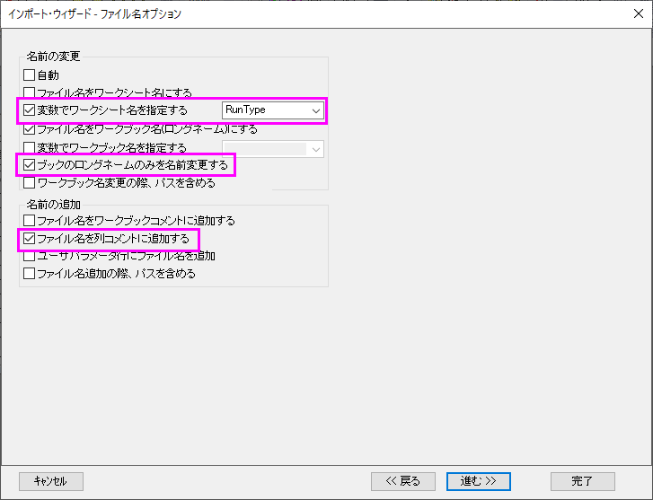
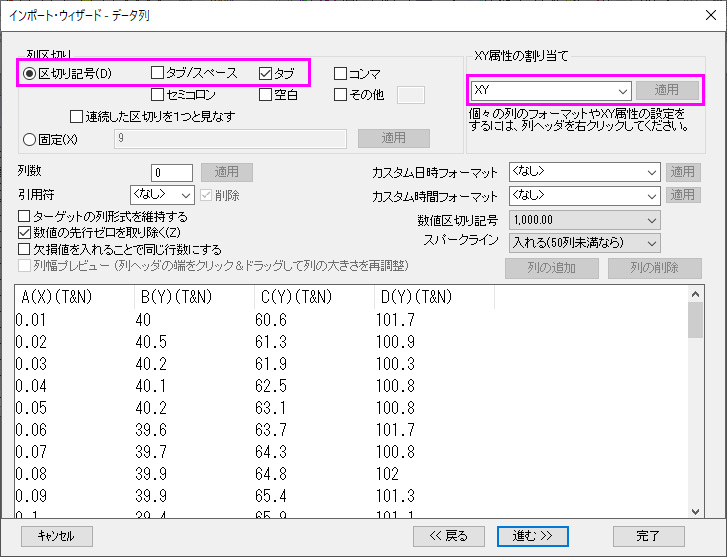
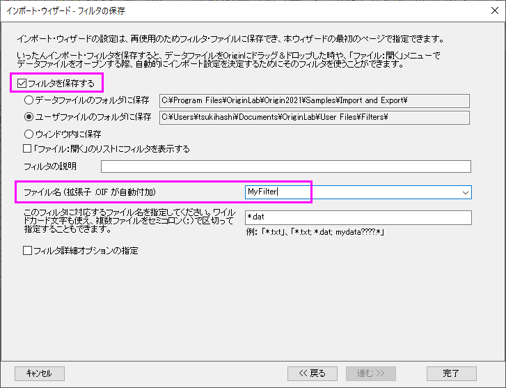
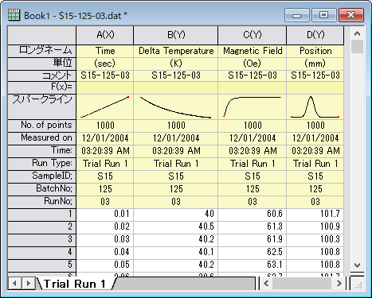
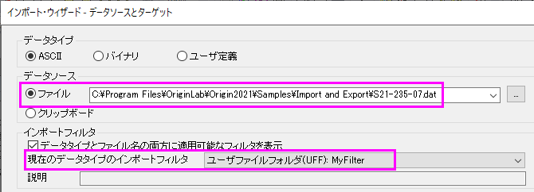

インポートウィザード
インポートウィザード
概要
インポートウィザードを使うと、複雑なASCIIファイルをインポートでき、インポートするファイル名とヘッダから変数に抽出し(Originで利用するため)、ユーザ指定の区切り文字や日時フォーマットを指定したり、LabTalkスクリプトを使ってデータをインポートした後にデータ処理を行うことができます。さらに、カスタム設定をフィルタファイル（.oif）として保存して、同じまたは同様の構造のファイルをインポートするために繰り返し使用することができます。
学習する項目
このチュートリアルでは、インポートウィザードの使用方法について説明しています。
- ファイル名やファイルヘッダから変数を抽出します
- インポート設定を保存し、それを新しいデータで使用する
ステップ
- 新規ワークブックを開きます。メニューよりデータ：ファイルからインポート：インポートウィザードと選択し、インポートウィザードダイアログを開きます。ファイルボックスの右側にある参照 ボタンをクリックします。\Samples\Import and Export フォルダを開き、S15-125-03を選択します。
- 
VarsFromFileNameAndheader.oifインポートフィルタは、[インポートフィルタ]：[現在のタイプのインポートフィルタ]で自動的に選択されます。デフォルトでは、データフォルダにインポートフィルタがある場合、フィルタはデータのインポートに自動的に使用されます。この例では、このデータを段階的にインポートして、同様のフィルタを作成する方法を示します。したがって、<なし>を選択します。
進むをクリックします。
- ヘッダ行ページでは、ワークシートヘッダを簡単にカスタマイズすることができます。下部のプレビューパネルは、この例のように多くのヘッダ行を持つファイルをインポートする場合、特に役立ちます。ヘッダ行の自動決定 のチェックボックスを外します。プレビューパネルの行6にカーソルを置き、メインヘッダ行 固定番号の隣にあるボタンをクリックして、メインヘッダ行を指定します。同様に、ロングネームと単位の行を指定します。
- 
進むをクリックします。
- 変数抽出ページでは、ファイル名とファイルヘッダから変数を抽出できます。これらの変数は、ページ情報に保存したり、列ヘッダ行に配置したり、グラフの注釈に使用したりできます。区切りを使って変数名とその値の位置を指定する、変数をページ情報に追加する、各変数のユーザパラメータの行を作成するを選択します。
- 
進むをクリックします。
- 区切り記号による変数抽出ページでは、指定した区切り文字で変数の名前と値を抽出できます。このサンプルでは、以下を入力します。
- 変数の行 FN04、区切り = その他で-を入力し、
- 値 = S15、変数名を入力 = SampleID;
- 値 = 125、変数名を入力 = BatchNo;
- 値 = 03、変数名を入力 = RunNo;
- 変数の行 H002、区切り = コロン、値 = 1000、ファイルより変数名を抽出を選択して名前= No. of points;
- 変数の行 H004、区切り = コロン、値 = 12/01/2004、ファイルより変数名を抽出を選択して名前= Measured on;
- 変数の行 H005、区切り = タブ、
値 = 03:20:39 AM、ファイルより変数名を抽出を選択して名前= Time;
- 変数の行 H006、区切り = タブ、
値 = Trial Run 1、ファイルより変数名を抽出を選択して名前= Run Type;
- 
進むをクリックします。
- ファイル名オプションページで、変数でワークシート名を指定するにチェックを入れ、ドロップダウンリストよりRunTypeを選択します。これにより変数RunTypeにワークシートの名前を変更します。また、ブックのロングネームのみを名前変更するとファイル名を列コメントに追加するを選択します。
- 
進むをクリックします。
- データ列ページで、列区切りから区切り記号でタブを選択します。また、XY属性の割り当てでXYと入力します。適用ボタンをクリックし、下部パネルでデータ列をプレビューします。
- 
- 「進む」を2回クリックし、「フィルタの保存」ページに移動します。これらの設定を再度使用するには、このインポート手順をフィルタとして保存します。フィルタを保存するチェックボックスにチェックを付け、ファイル名に適切なフィルタ名を入力します。(例えばMyFilter など)

完了ボタンをクリックして、データをインポートします。
- 
- インポートウィザードダイアログを再度開きます。<Originインストールフォルダ>\Samples\Import and Export\S21-235-07.datを選択します。現在のデータタイプのインポートフィルタから保存したばかりのMyFilterフィルタを選択できます。

完了ボタンを直接クリックします。ファイルのインポートにMyFilterの設定が使用されます。